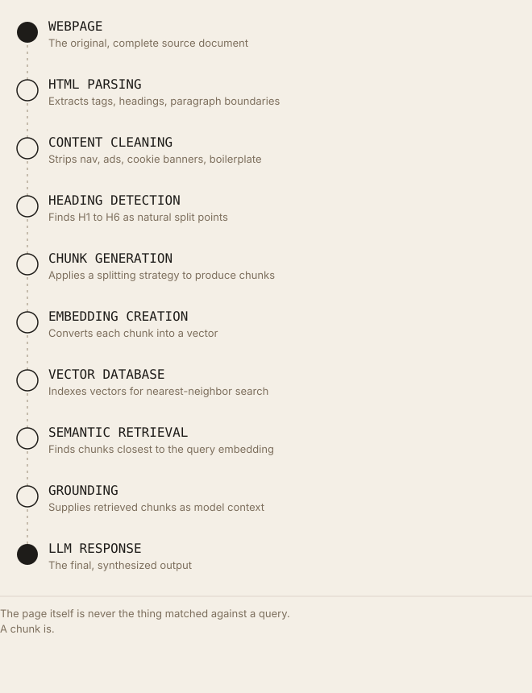

AI Doesn't Read Web Pages, It Retrieves Chunks
In retrieval-augmented systems, a page is never the thing matched against a query. It's fetched, split into smaller units, and each unit competes independently.
Executive Summary
When a person imagines an AI chatbot answering a question about a website, the intuitive mental model is that the model "reads" the page, the way a human would. In retrieval-augmented systems, the architecture behind most AI-powered search and most production chatbots grounded in external data, that's not what happens. A page is fetched, stripped of boilerplate, split into smaller units called chunks, and each chunk is converted into a vector. When a query arrives, the system finds the chunks whose vectors are closest to the query's vector and hands only those chunks to the model as context. The page, as a single unit, is never the thing being matched or retrieved. This is not true of every LLM interaction, a model reading a single document a user pastes directly into a chat, or a model with a very large context window processing one file end to end, works differently. But for retrieval, the mechanism that lets an AI system search across many documents at once, chunking is the standard architecture, documented consistently across every major vector-database and RAG-framework vendor. This article explains why, and what it changes about how content should be structured.
Introduction
The assumption that AI "reads" a webpage the way a person does is a reasonable one to start from, it's how humans experience an LLM's output, as a response that seems to reflect the whole page's content. But retrieval systems, by design, don't operate on whole pages as their basic unit. Pinecone's own documentation on chunking strategies states the problem plainly: when documents are too large to feed into a model's context window whole, or too large to search efficiently across a large collection, they need to be broken into smaller pieces first, pieces small enough to embed precisely and retrieve individually.
That distinction matters because it's not a minor implementation detail; it changes what "being findable to AI" actually means. A page can be excellent, comprehensive, and well-written, and still perform poorly in retrieval if its internal structure doesn't produce clean, self-contained chunks. This article traces exactly why chunking exists, how the major frameworks implement it differently, and what that means concretely for how content should be structured, while being explicit that this describes retrieval-augmented pipelines specifically, not every way an LLM can consume text.
What Is a Chunk?
Chunk. A contiguous span of text, typically a paragraph, a few sentences, or a section, extracted from a larger document and treated as an independent, retrievable unit. A chunk is the thing that gets embedded, stored, and retrieved; it is not the same object as the page it came from.
Passage. Used largely interchangeably with "chunk" in academic information retrieval literature, particularly in question-answering research (Karpukhin et al.'s Dense Passage Retrieval paper uses "passage" as its primary term for this same unit).
Document. The original, complete source, a webpage, a PDF, a support article, before it's split. In RAG system design, "document" and "chunk" are deliberately distinct terms precisely because a document is rarely the unit that gets matched against a query.
Embedding. A fixed-length numerical vector representing a chunk's meaning, positioned in a high-dimensional space such that semantically similar chunks produce vectors that are close together.
Context window. The maximum amount of text (measured in tokens) a model can process in a single call, as of mid-2026, this ranges from roughly 200K tokens (Claude's standard tier, with a 1M-token beta) to 1M to 1.1M tokens (GPT-5.x, standard Gemini tiers) up to 10M tokens in some Gemini configurations. Context window size determines an upper bound on how much retrieved content (and everything else in a request, system prompt, conversation history, retrieved chunks) can be included at once; it does not by itself determine retrieval accuracy.
Semantic unit. A span of text that expresses one complete, coherent idea, the property good chunking tries to preserve, and naive chunking often breaks.
The difference between a webpage and a chunk, stated precisely: a webpage is a rendering unit, it exists to be displayed to a browser and read top to bottom by a human. A chunk is a retrieval unit, it exists to be independently matched against a query, often read by a system in complete isolation from the rest of its source page. Content that reads perfectly in page order can fail badly as an isolated chunk if it depends on context established several paragraphs earlier.
Why AI Systems Use Chunks
Token limits. Even with the substantially larger context windows available by mid-2026, retrieval systems typically operate over collections, hundreds, thousands, or millions of documents, far exceeding what any single context window could hold, regardless of size. Chunking is what makes search across a large collection tractable at all; a bigger context window changes how much retrieved content can be used per query, not whether retrieval and chunking are still needed to select that content from a large corpus in the first place.
Retrieval efficiency. Vector search operates over an index of embeddings; smaller, focused units produce more precise vector representations than large, topic-mixed ones, since a single embedding has to represent everything in its input, mixing multiple topics in one chunk dilutes the vector's specificity for any one of them.
Semantic similarity. A chunk's embedding is only as useful as the coherence of what it represents. Pinecone's own stated rule of thumb for evaluating chunk quality is direct: if a chunk of text makes sense to a human without its surrounding context, it will make sense to the model as well, and fixed-size splitting, which ignores sentence and paragraph boundaries, regularly fails that test.
Embedding generation and vector databases. Every embedding call and every vector-index entry has both a computational cost and a monetary cost, scaling with the number of chunks. This is a direct, real engineering constraint, more chunks means more embedding calls, larger indexes, and higher storage and query costs, not a hypothetical one.
Grounding. Supplying a generation model with the specific, relevant chunks needed to answer a query, rather than an entire source document, reduces the amount of irrelevant material the model has to filter through to construct a grounded response.
Latency. Smaller, targeted context reduces the token count a model has to process per request, directly affecting response time; larger context inputs measurably increase time-to-first-token.
Cost. Nearly every commercial LLM API prices by token count, for both input and output; retrieving only the relevant chunks rather than entire documents directly reduces per-query cost at scale.
Scalability. A chunked, indexed architecture allows a retrieval system to search across a corpus that grows into the millions of documents without a linear increase in per-query context size, a property whole-document approaches don't have, since a whole-document approach can't cap the size of what a single relevant match might contribute to a query.
An important caveat, stated per this article's own constraints: larger context windows do not eliminate the case for chunking, but they do change some of its trade-offs, a system with a very large context window can, in some architectures, retrieve larger chunks or more of them per query without exceeding the window. Independent research on long-context model behavior has documented a separate, real problem here: models retrieving information from the middle of very long contexts perform measurably worse than when that same information sits near the beginning or end, a phenomenon researchers have termed "lost in the middle." This means simply feeding a model more raw text, even within a technically supported context window, does not reliably substitute for retrieving well-chosen, relevant chunks.
The Chunking Pipeline

The page itself is never the thing matched against a query. A chunk is.HTML parsing extracts the underlying markup structure, tags, headings, paragraph boundaries, that later stages depend on. Content cleaning removes navigation, ads, cookie banners, and other boilerplate that would otherwise pollute embeddings with irrelevant text; this is the same extraction-difficulty problem that motivated the llms.txt proposal specifically for AI consumption. Heading detection identifies structural boundaries (H1 to H6) that many chunking strategies use as natural, semantically meaningful split points, rather than arbitrary character counts. Chunk generation applies a specific splitting strategy (detailed below) to produce the final retrievable units. Embedding creation converts each chunk into a vector via a model such as those in the Sentence-BERT family or a commercial embedding API. Vector database storage (FAISS, Pinecone, Weaviate, Milvus, Chroma, and similar systems) indexes these vectors for efficient approximate-nearest-neighbor search. Semantic retrieval finds the chunks closest to a query's embedding. Grounding supplies those retrieved chunks to a generation model as context. LLM response is the final, synthesized output.
Different Chunking Strategies
Fixed-size chunking splits text into equal-length spans (by character or token count), optionally with overlap between consecutive chunks to preserve context across a boundary. Advantage: simple, fast, predictable output size. Disadvantage: ignores sentence and paragraph structure entirely, regularly cutting mid-sentence or mid-thought.
Sliding window chunking is a variant of fixed-size chunking where consecutive chunks overlap by a defined amount, specifically to preserve transitional context and linked ideas that a hard boundary would otherwise sever. Advantage: reduces the "cut mid-thought" failure of pure fixed-size splitting. Disadvantage: increases total chunk count and storage/embedding cost proportional to the overlap percentage.
Recursive chunking, implemented as LangChain's RecursiveCharacterTextSplitter, and documented as LangChain's default splitter for this reason, attempts to split on a prioritized list of separators (paragraph breaks first, then line breaks, then sentences, then words), falling back to a coarser separator only if a resulting chunk still exceeds the target size. Advantage: respects document structure without requiring an embedding model at split time, and handles the majority of general-purpose cases well, per Pinecone's own stated framing of it as a strong middle ground. Disadvantage: still ultimately governed by a size target, so very long unstructured passages can still be split at less-than-ideal points.
Sentence chunking splits strictly on sentence boundaries. Advantage: guarantees grammatically complete units. Disadvantage: individual sentences are frequently too short to carry meaningful standalone context, especially for anaphoric references ("it," "this," "the company") to something established in a prior sentence.
Paragraph chunking splits on paragraph boundaries. Advantage: aligns well with how content is naturally authored to group related ideas. Disadvantage: paragraph length varies enormously by writing style, producing inconsistent chunk sizes that can exceed embedding-model input limits or retrieval-system size targets.
Semantic chunking uses embedding similarity between adjacent sentences to detect genuine topic shifts, splitting where similarity drops below a threshold (commonly a percentile-based cutoff, as implemented in LangChain's SemanticChunker) rather than at a fixed size. Advantage: one 2026 benchmark comparison reported semantic chunking producing the highest accuracy lift among tested strategies against naive baselines in that specific test, a single vendor benchmark, not a peer-reviewed, replicated finding, and results are dataset-dependent. Disadvantage: requires an embedding model at chunking time, adding compute cost and latency to the ingestion pipeline itself.
Markdown-aware chunking parses Markdown syntax (headings, lists, code blocks) to split along the document's own declared hierarchy rather than treating it as flat text. Advantage: directly preserves the author's intended structure. Disadvantage: only applicable to content that's actually well-formed Markdown or convertible to it cleanly.
Section-aware chunking performs structural splitting first, at document headers and sections, and only applies size limits within those structural boundaries as a second pass, a two-pass pattern some production RAG-pipeline implementations use specifically to avoid breaking a heading's content across chunks arbitrarily. Advantage: combines the structural fidelity of Markdown-aware chunking with a hard ceiling on individual chunk size. Disadvantage: requires the source content to have reliably marked structural boundaries to begin with, unstructured prose gets no benefit from this approach.
Why Chunk Quality Matters
Retrieval accuracy. A chunk that mixes two topics produces an embedding that's a compromise between both, weakening its similarity score to queries about either one specifically, this is a direct, mechanical consequence of how embedding models represent meaning as a single vector per input. Which sections of a page actually get selected as chunks in production systems is measured directly in the site's research on what AI actually reads on a webpage.
Grounding. A model given a well-bounded, complete chunk has to do less inferential reconstruction to use it correctly; a model given a chunk that starts or ends mid-thought has to either guess at missing context or produce an incomplete answer.
Citation likelihood. In systems that track provenance back to source chunks, a self-contained chunk is more likely to be selected and cited cleanly, since it can stand on its own as supporting evidence, a chunk that only makes sense alongside its neighbors is a weaker citation candidate even if its content is relevant.
Semantic relevance. Directly tied to retrieval accuracy above, chunk quality and semantic-match quality are the same underlying mechanism, described from two angles.
Answer completeness. If a chunk boundary falls in the middle of a multi-part explanation (for instance, splitting a list of steps across two separate chunks), a retrieval system may surface only part of the needed information, producing an incomplete grounded answer even when the source document, read as a whole, fully addressed the query.
Hallucination reduction. This is a plausible, mechanistically reasonable connection, a model given incomplete or poorly bounded context has more gaps to fill from parametric knowledge rather than grounded evidence, but no controlled, published study reviewed for this article isolates chunk quality specifically as an independent variable and measures its effect on hallucination rate. This article states that gap explicitly rather than treating the connection as confirmed.
Trust. Downstream of the above: a system that reliably retrieves complete, accurate, well-grounded chunks produces answers a user can rely on more consistently; this is a reasonable end-to-end consequence of the mechanisms above, not a separately measured metric on its own.
A practical example. A product page listing installation steps as "Step 1... Step 2... Step 3..." within a single unbroken paragraph, with no heading or list markup, is a strong candidate for a fixed-size splitter to cut between Step 2 and Step 3, producing one chunk with an incomplete instruction set. The same content marked up as a proper HTML list, or split by a HowTo-aware or section-aware chunker, would far more reliably stay intact as one retrievable unit.
Common Chunking Mistakes
- Chunks too large, dilutes the embedding's specificity by forcing it to represent multiple ideas at once, and risks exceeding downstream size limits.
- Chunks too small, as with pure sentence chunking, risks losing the surrounding context a short span needs to be independently meaningful.
- Broken headings, a heading separated from the content it introduces (split across a chunk boundary) loses the structural signal that heading was meant to provide to both readers and chunkers.
- Mixed topics, a chunk covering two unrelated ideas produces a compromised embedding that matches neither topic's queries well.
- No semantic boundaries, pure fixed-size or fixed-character splitting with no awareness of sentence, paragraph, or structural markers, regularly producing mid-thought cuts.
- Missing context, a chunk that depends on an antecedent (a pronoun, a previously named entity) established several paragraphs earlier, but retrieved and read in isolation.
- Duplicate chunks, near-identical content appearing in multiple chunks (from templated boilerplate, or from poor deduplication during ingestion) wastes index space and can crowd out genuinely distinct, relevant chunks in retrieval results.
- Poor document hierarchy, source content with no clear heading structure at all gives every chunking strategy less to work with, forcing a fallback to size-based splitting regardless of which strategy is nominally configured.
Optimising Content for Chunk Retrieval
- Clear headings, name the specific concept or entity a section addresses, giving structural and Markdown-aware chunkers a reliable, meaningful split point.
- Logical hierarchy, consistent use of heading levels (H2 for major sections, H3 for subsections) gives section-aware chunking strategies an accurate structural map to follow.
- Short, focused sections, content organized so that each section covers one complete idea reduces the odds that any reasonable chunking strategy splits it awkwardly.
- Entity-rich writing, explicitly naming entities rather than relying on pronouns reduces the context a chunk needs from its neighbors to be independently meaningful, directly addressing the "missing context" failure mode above, a mechanism explored in more depth in the site's research on entity clarity in retrieval scoring.
- Internal links, primarily a crawl-discovery and site-architecture signal, not a chunk-quality one; included here because it remains a prerequisite (a page must be found and crawled before it can be chunked at all), not because it improves chunking itself.
- Schema, structured data can supply explicit type and entity context that helps a system interpret a page's content correctly, with confirmed relevance to Google's own AI features specifically; its effect on third-party RAG pipelines' chunking or retrieval isn't independently documented.
- Context preservation, writing each section so it doesn't depend on unstated information from earlier sections directly reduces the "missing context" failure this article has already identified as a common mistake.
- Semantic continuity, maintaining a consistent topic focus within a section (rather than drifting across several loosely related ideas) keeps a section's eventual chunk embedding specific and precise.
Each of these works by the same underlying mechanism: reducing the amount of external context a chunk needs in order to be correctly and independently interpretable, since that is exactly the condition under which retrieval systems will actually use it.
Traditional SEO vs. Chunk Optimisation
| Traditional SEO | Chunk Optimisation |
|---|---|
| Pages | Chunks (paragraph/section-scale spans within a page) |
| Keywords | Entities (explicitly named, disambiguated) |
| Rankings | Retrieval (semantic similarity match at query time) |
| Meta titles | Semantic structure (headings, hierarchy, section boundaries) |
| Page relevance | Chunk relevance (a sub-page span's match to a specific query) |
| Whole-document authority signals (backlinks) | Embedding quality of individual spans |
| Crawl and index the page | Crawl, extract, chunk, and embed the page's content |
| One unit competes per query | Multiple chunks from the same page can each independently compete for different queries |
How both approaches complement one another: a page still needs to be crawled and indexed to be eligible for either traditional ranking or chunk-based retrieval, nothing in this article's chunking discussion bypasses that gate. What changes is the unit of competition within an already-eligible page: traditional SEO optimizes the page as a whole for one ranking position, while chunk optimization recognizes that different sections of the same page may independently win or lose separate retrieval competitions for different queries, an idea with no real equivalent in page-level ranking.
Practical GEO Checklist
- Use descriptive headings that name the specific concept a section covers, not generic labels.
- Maintain one topic per section, mixed-topic sections weaken every chunking strategy that touches them.
- Avoid abrupt topic changes within a single paragraph or section; if a topic shifts, start a new section with its own heading.
- Use entity-rich language, explicit names over pronouns, especially at section starts.
- Preserve context within each section so it can stand alone if retrieved in isolation.
- Reduce ambiguity by disambiguating polysemous terms on first mention within each section, not just once at the top of the page.
- Use structured data (Article, FAQPage, HowTo) where it matches genuine content structure, particularly for confirmed platforms.
- Maintain semantic continuity, keep each section's sentences focused on the same underlying idea.
- Improve information density, remove filler that dilutes a chunk's embedding without adding retrievable substance.
- Write for retrieval explicitly: ask, for each section, "would this make sense if someone read only this paragraph, with no surrounding context?"
- Keep lists and sequential steps in genuine list markup (
<ol>,<ul>), not run-on prose, to help both structural chunkers and human readers. - Use consistent heading-level hierarchy (H2 to H3 to H4) rather than skipping levels or using headings purely for visual styling.
- Avoid extremely long, undifferentiated blocks of text with no internal headings, they force every chunking strategy back onto arbitrary size-based splitting.
- Where content naturally repeats (product variants, templated sections), differentiate each instance enough that chunks aren't near-duplicates of each other.
- Front-load the specific entity or concept a section addresses in its first sentence, rather than building up to it.
- Test how your own content chunks using an open chunking library (LangChain's
RecursiveCharacterTextSplitteror similar) to see the actual output before assuming a strategy works. - Pair chunk-level structure with page-level fundamentals (crawlability, indexing eligibility), chunk optimization cannot compensate for a page that's never fetched.
- Avoid relying solely on very large context windows as a substitute for good structure; "lost in the middle" research shows position within a long context measurably affects retrieval, even within a supported window size.
- Revisit chunking-relevant structure after significant content edits, restructuring a page's content without updating headings can silently degrade downstream chunk quality.
- Treat this as an evolving, testable discipline, chunking-strategy research (semantic chunking, contextual retrieval, late chunking) is active and published results vary by dataset; validate against your own content and query patterns rather than assuming a single strategy is universally best.
Future Outlook
Longer context windows. Context windows have grown substantially, from roughly 4K to 8K tokens in early flagship models to 1M tokens and beyond by mid-2026 across major providers. As established above, this changes retrieval trade-offs (more retrieved content can fit per query) without eliminating the underlying need to select which content to retrieve from a large corpus, chunking and retrieval remain necessary for searching across collections larger than any single context window, regardless of how large that window grows.
Agentic search. As AI systems perform multi-step tasks requiring several retrieval calls within one session, chunk quality compounds across steps, an agent building on a poorly grounded intermediate retrieval result carries that error forward, a reasonable architectural inference rather than a documented, measured finding specific to any named production system.
Persistent memory. Whether AI assistants increasingly retrieve from session-spanning memory stores, in addition to or instead of live document retrieval, is an active product-design direction industry-wide; no primary source reviewed for this article documents a specific technical architecture unifying persistent memory with the chunk-retrieval pipeline described here.
Dynamic and adaptive retrieval. Published 2026-era techniques, including approaches selecting chunk granularity per query rather than using a single fixed size across an entire corpus, represent an active, documented research direction, distinct from the static, one-time chunking strategies detailed earlier in this article.
Knowledge graphs. Combining chunk-based dense retrieval with structured, entity-linked knowledge-graph lookups is an observed architectural pattern in production RAG systems generally; the specific weighting between the two approaches in any particular commercial product isn't published in comparable detail across vendors.
Multimodal chunking. Extending chunking beyond text to images, video segments, and other media is a natural extension of the same underlying problem (breaking large content into independently retrievable, embeddable units), though this article found no primary-source documentation of a standardized approach comparable to the text-chunking strategies detailed above.
Real-time retrieval. Google's own stated architecture for AI Overviews and AI Mode, retrieval-augmented generation drawing on its existing, continuously updated Search index, is a documented example of retrieval operating against live, current content rather than a static, one-time-ingested corpus; whether this specific pattern generalizes to how other platforms will architect real-time retrieval isn't something this article can responsibly extrapolate beyond Google's own stated case.
Key Takeaways
- Retrieval-augmented systems match queries against chunks, sub-document spans, not whole pages; this is documented, standard architecture across every major vector-database and RAG-framework vendor examined for this article.
- Chunking is necessary primarily because retrieval operates across large collections that exceed any context window, and because focused, single-topic embeddings retrieve more precisely than broad, mixed-topic ones.
- Larger context windows change how much retrieved content fits per query; they don't eliminate the need to select which content to retrieve from a large corpus in the first place.
- "Lost in the middle" research documents a real, measured degradation in retrieval accuracy for information placed mid-context, even within a technically supported window size.
- Recursive chunking (splitting on a prioritized list of separators) is documented as LangChain's default strategy specifically because it handles general-purpose content well without requiring an embedding model at chunking time.
- Semantic chunking uses embedding-similarity shifts to detect topic boundaries and has shown strong results in at least one published vendor benchmark, though results are dataset-dependent and not established as universally superior.
- Pinecone's stated rule of thumb, a chunk should make sense to a human reading it in isolation, is a practical, testable standard for evaluating chunk quality directly.
- The connection between chunk quality and hallucination reduction is mechanistically plausible but not confirmed by a controlled, published study isolating that specific variable.
- Content structured with clear headings, entity-explicit writing, and topic-focused sections produces measurably better chunk boundaries across every major chunking strategy examined in this article.
- This describes retrieval-augmented pipelines specifically, a model reading one document a user pastes directly, or processing a single file end to end within its context window, is a different, whole-document interaction pattern that doesn't involve this chunking pipeline at all.
Glossary
- Chunk
- A contiguous span of text extracted from a document and treated as an independent retrievable unit.
- Passage
- Academic IR term largely synonymous with "chunk," used in papers like Dense Passage Retrieval.
- Context window
- The maximum text length a model can process in a single call.
- Recursive chunking
- Splitting on a prioritized list of separators (paragraphs, then lines, then sentences, then words), LangChain's documented default strategy.
- Semantic chunking
- Splitting based on embedding-similarity shifts between adjacent sentences rather than a fixed size.
- Chunk overlap
- Shared text between consecutive chunks, used to preserve context across a split boundary.
- Lost in the middle
- A documented phenomenon where information positioned in the middle of a long context is retrieved less reliably than information near the beginning or end.
- Vector database
- Infrastructure for efficient approximate-nearest-neighbor search over chunk embeddings (FAISS, Pinecone, Weaviate, Milvus, Chroma).
- Grounding
- Supplying retrieved chunks to a generation model as context for its response.
FAQ
Does this mean whole-page content doesn't matter anymore?
No. A page still needs to be crawled, indexed, and eligible for retrieval before any of its chunks can be considered, page-level fundamentals remain a prerequisite, not a replacement, for chunk-level optimization.
Do all AI systems chunk content?
No, and this article does not claim that. Chunking is specific to retrieval-augmented pipelines searching across a corpus. A model processing one document a user provides directly, within its context window, does not necessarily chunk that document first, this depends on the specific application and how it's built.
Is there one correct chunk size?
No. Published guidance varies by use case, general documents commonly use smaller chunk sizes, technical reference material commonly uses larger ones, and 2026-era research suggests optimal chunk size can vary even within a single corpus depending on the specific query. This article does not endorse one universal number.
Will bigger context windows eventually make chunking unnecessary?
Not for the retrieval problem specifically, retrieving relevant content from a large corpus still requires deciding what to retrieve, which requires some unit of comparison. Bigger context windows change what happens after that selection (how much retrieved content can be included), not whether selection is needed in the first place.
References
- Pinecone, "Chunking Strategies for LLM Applications," pinecone.io/learn/chunking-strategies
- LangChain documentation,
RecursiveCharacterTextSplitterandSemanticChunkerreference - Karpukhin, V., et al., "Dense Passage Retrieval for Open-Domain Question Answering," Proceedings of EMNLP 2020 (ACL Anthology)
- Reimers, N., and Gurevych, I., "Sentence-BERT: Sentence Embeddings using Siamese BERT-Networks," Proceedings of EMNLP-IJCNLP 2019 (ACL Anthology)
- Liu, N. F., et al., "Lost in the Middle: How Language Models Use Long Contexts," Transactions of the Association for Computational Linguistics, 2023
- Anthropic Engineering, "Introducing Contextual Retrieval"
- Answer.AI, "/llms.txt, a proposal to provide information to help LLMs use websites," September 3, 2024 (cited for the HTML-extraction-difficulty problem statement)
- Google for Developers, "AI Features and Your Website," Google Search Central documentation